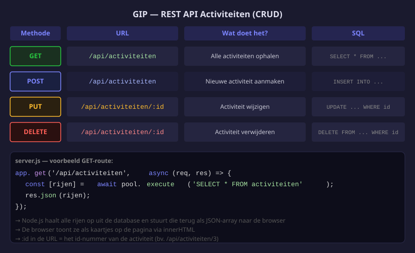

Activiteiten ophalen en tonen
- Een GET-route schrijven die alle activiteiten ophaalt
- De activiteiten tonen op de startpagina via
fetch() - Een eenvoudige HTML-kaart genereren met JavaScript
- De volledige CRUD-routes schrijven voor activiteiten

1. GET-route: alle activiteiten
Voeg dit toe aan server.js (voor app.listen):
// GET /api/activiteiten — iedereen mag deze route oproepen (geen login vereist)
app.get('/api/activiteiten', async (req, res) => {
// pool.execute() voert de SQL-query uit en wacht op het resultaat (await).
// Het geeft een array van twee elementen terug:
// [0] = de rijen die MySQL teruggeeft (een array van objecten)
// [1] = metadata over de kolommen (negeren we hier)
// Door destructuring schrijven we [rijen] in plaats van result[0].
const [rijen] = await pool.execute(
'SELECT * FROM activiteiten ORDER BY datum ASC'
// ORDER BY datum ASC = vroegste datum eerst
);
// res.json() zet het JS-array om naar JSON-tekst en stuurt het terug.
// Express zet automatisch de Content-Type header op 'application/json'.
res.json(rijen);
});Test: open http://localhost:3000/api/activiteiten — je ziet de vier activiteiten als JSON.
2. Activiteiten tonen op de startpagina
// Client/js/index.js
// async function: een functie die await mag gebruiken
async function laadActiviteiten() {
// fetch() stuurt een HTTP GET-request naar de server.
// Zonder tweede argument is de methode altijd GET.
// await wacht tot de server antwoordt voordat de code verder gaat.
const response = await fetch('/api/activiteiten');
// response.json() leest de JSON-tekst en zet die om naar een JS-array.
// Ook dit is asynchroon, vandaar de tweede await.
const activiteiten = await response.json();
const lijst = document.getElementById('activiteiten-lijst');
// Geen activiteiten? Toon een melding en stop de functie.
if (activiteiten.length === 0) {
lijst.innerHTML = '<p>Geen activiteiten gepland.</p>';
return;
}
// .map() doorloopt elk activiteit-object en geeft een HTML-string terug.
// .join('') plakt alle strings aan elkaar zonder scheidingsteken.
lijst.innerHTML = activiteiten.map(act => `
<article class="activiteit-kaart">
<h3>${act.naam}</h3>
<p>${act.beschrijving || ''}</p>
<!-- act.beschrijving || '' : toon lege string als beschrijving null is -->
<p>📅 ${act.datum.slice(0,10)} 🕐 ${act.starttijd.slice(0,5)}</p>
<p>📍 ${act.locatie || '—'}</p>
<p>Plaatsen: ${act.max_deelnemers}</p>
</article>
`).join('');
}
// De functie aanroepen zodra de pagina geladen is
laadActiviteiten();3. Datum netjes weergeven
MySQL stuurt de datum terug als een lange string ("2026-02-10T00:00:00.000Z"). Je formatteert het zo:
const datum = new Date(act.datum).toLocaleDateString('nl-BE');
// "10/02/2026"
// In de kaart:
<p>📅 ${new Date(act.datum).toLocaleDateString('nl-BE')}</p>4. Activiteiten toevoegen (POST) — voor de admin
// POST /api/activiteiten — activiteit toevoegen (later beveiliging toegevoegd in H05/H06)
app.post('/api/activiteiten', async (req, res) => {
// req.body bevat de JSON die de client meestuurde in de request body
// Destructuring pakt de velden eruit die we nodig hebben
const { naam, beschrijving, datum, starttijd, locatie, max_deelnemers } = req.body;
// Validatie: zijn de verplichte velden aanwezig?
// Ontbreken ze, stuur dan status 400 (Bad Request) terug.
if (!naam || !datum || !starttijd) {
return res.status(400).json({ fout: 'Naam, datum en starttijd zijn verplicht' });
}
// De vraagtekens (?) zijn 'prepared statement'-parameters.
// mysql2 vult die in met de waarden uit het array — veilig tegen SQL-injectie!
// Nooit variabelen rechtstreeks in de SQL-string zetten.
const [resultaat] = await pool.execute(
'INSERT INTO activiteiten (naam, beschrijving, datum, starttijd, locatie, max_deelnemers) VALUES (?, ?, ?, ?, ?, ?)',
[naam, beschrijving || null, datum, starttijd, locatie || null, max_deelnemers || 20]
// null voor optionele velden die niet meegestuurd werden
);
// 201 Created: de resource is succesvol aangemaakt
// resultaat.insertId = het AUTO_INCREMENT-id van de nieuwe rij
res.status(201).json({ id: resultaat.insertId, bericht: 'Activiteit aangemaakt' });
});Schrijf nooit variabelen rechtstreeks in een SQL-string:
// FOUT — nooit doen!
`INSERT INTO activiteiten (naam) VALUES ('${naam}')`
// CORRECT — gebruik altijd vraagtekens
pool.execute('INSERT INTO activiteiten (naam) VALUES (?)', [naam])Een kwaadwillige gebruiker kan anders de SQL-query manipuleren en de database beschadigen of leegmaken.
5. Activiteiten bijwerken en verwijderen
// PUT /api/activiteiten/:id — activiteit bijwerken
// :id is een URL-parameter — bij '/api/activiteiten/5' is req.params.id gelijk aan '5'
app.put('/api/activiteiten/:id', async (req, res) => {
const { naam, beschrijving, datum, starttijd, locatie, max_deelnemers } = req.body;
const [resultaat] = await pool.execute(
'UPDATE activiteiten SET naam=?, beschrijving=?, datum=?, starttijd=?, locatie=?, max_deelnemers=? WHERE id=?',
[naam, beschrijving || null, datum, starttijd, locatie || null, max_deelnemers || 20, req.params.id]
);
// affectedRows = hoeveel rijen er daadwerkelijk aangepast zijn
// Als het 0 is, bestaat de activiteit met dit id niet
if (resultaat.affectedRows === 0) {
return res.status(404).json({ fout: 'Activiteit niet gevonden' });
}
// 204 No Content: de update is gelukt, maar er is niets terug te sturen
res.status(204).end();
});
// DELETE /api/activiteiten/:id — activiteit verwijderen
app.delete('/api/activiteiten/:id', async (req, res) => {
// req.params.id: het getal uit de URL (bv. '/api/activiteiten/3' → id = '3')
await pool.execute('DELETE FROM activiteiten WHERE id=?', [req.params.id]);
res.status(204).end();
});200 OK— verzoek gelukt, antwoord bevat data (standaard bijres.json())201 Created— nieuw object aangemaakt (gebruik bij POST)204 No Content— actie gelukt, maar geen data om terug te sturen (gebruik bij PUT/DELETE)400 Bad Request— de client stuurde ongeldige of ontbrekende data401 Unauthorized— niet ingelogd403 Forbidden— ingelogd maar geen toestemming404 Not Found— het gevraagde object bestaat niet
| Route | Methode | Wat |
|---|---|---|
/api/activiteiten | GET | Alle activiteiten ophalen |
/api/activiteiten | POST | Activiteit toevoegen |
/api/activiteiten/:id | PUT | Activiteit bijwerken |
/api/activiteiten/:id | DELETE | Activiteit verwijderen |
Oefeningen
Maak de startpagina dynamisch: activiteiten worden geladen vanuit de database.
- Voeg de
GET /api/activiteitenroute toe aanserver.js - Maak
Client/js/index.jsaan met delaadActiviteiten()functie - Voeg
<script type="module" src="js/index.js">toe aanindex.html - Test: open de startpagina en bevestig dat je 4 activiteitenkaarten ziet
- Zorg dat de datum netjes geformatteerd is (
nl-BE)
Huistaak
Opdracht: Volledige CRUD-API voor activiteiten
Deel 1 — 4 punten: GET + front-end
- GET-route schrijven en testen via de browser
- Startpagina toont activiteiten met gecorrigeerde datum
Deel 2 — 4 punten: POST + PUT + DELETE
- POST-route schrijven inclusief validatie
- PUT-route schrijven
- DELETE-route schrijven
Deel 3 — 2 punten: Testen
- Test elke route met Postman of een test-form in de browser
- Screenshot van elk resultaat
Vragenlijst
Controleer of je de leerstof van dit hoofdstuk begrijpt.
Welke HTTP-methode gebruik je om een nieuwe activiteit toe te voegen?
Welke statuscode stuur je terug na het succesvol aanmaken van een activiteit?
Hoe formatteer je een datum uit MySQL als "10/02/2026" in JavaScript?
Wat retourneert pool.execute('SELECT * FROM activiteiten')?
Welke statuscode gebruik je na een succesvolle DELETE?